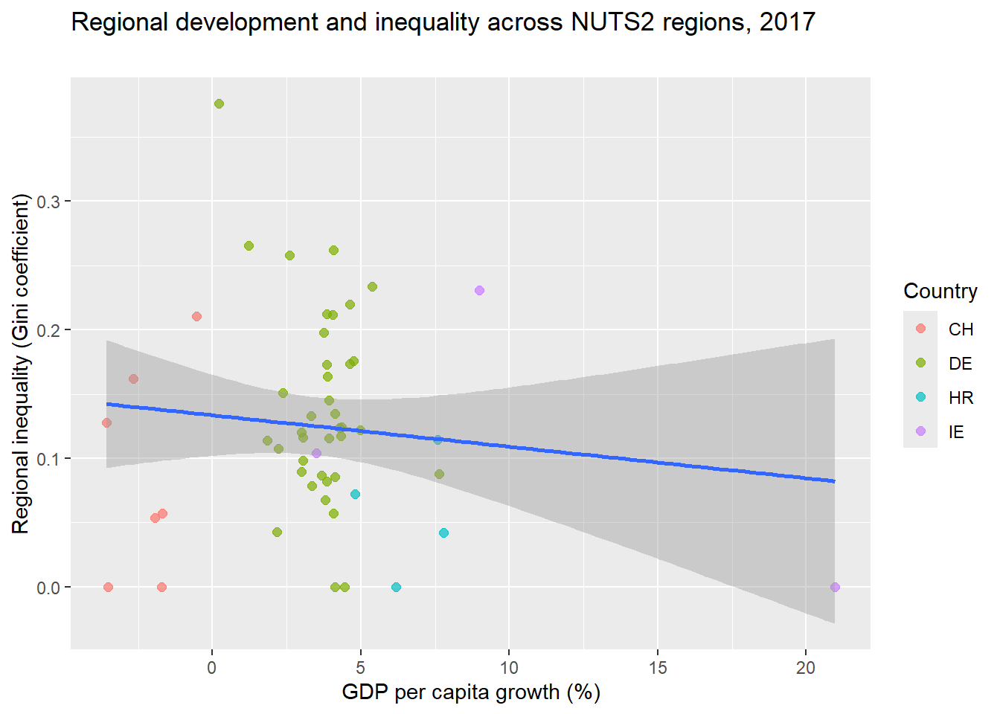

Assignment 4:
Regional GDP Inequality in 4 Selected European Economies - Synthesised Results.
Assignment 4 Consolidation of Key findings
Abstract
This paper looks at what drives internal economic disparities within European NUTS2 regions. Using Eurostat data for Germany, Ireland, Croatia, and Switzerland from 2000–2023, we measure how regional GDP per capita growth relates to the spread of GDP across NUTS3-regions inside each NUTS2-region. The analysis combines cross-sectional models, structural segmentation (population density, workforce size, unemployment), alternative functional forms, and fixed-effects panel estimation.
The results point in one direction: short-term regional growth does not meaningfully reduce internal GDP inequality. Cross-sectional regressions show weak and unstable effects, and segmentation reveals that structural characteristics matter far more than growth itself. High-density regions are generally more balanced internally, while rural and low-density regions show larger internal gaps. Workforce size and unemployment conditions influence inequality patterns, but their effects vary across models.
The panel estimates settle the picture. Once we control for region-specific characteristics and common yearly shocks, the growth–inequality relationship remains small. Internal disparities are largely shaped by long-term structural factors, not short-term performance.
Overall, the findings suggest that regional GDP inequality is a structural issue. Broad growth policies alone are insufficient; more targeted, place-based strategies are needed if the goal is to create more balanced development inside regions.
Introduction
Background
Regional development in Europe is uneven, not just between the different national economies but within the regions themselves. Many NUTS2 regions contain both strong and weak local economies, and the internal spread of GDP can be wide. These internal differences influence local labour markets, municipal finances, service provision, and long-term opportunities for residents. At the same time, regional inequality is often discussed at the national level, even though the more practical challenges, uneven access to jobs, productivity gaps, and infrastructure differences, play out inside regions. Understanding what drives internal regional GDP disparities is therefore important for anyone trying to make regional development more balanced.
Objectives
Assignments 1, 2, and 3 focused on different parts of this problem.
- Assignment 1 built the dataset: collecting GDP, population and information at the NUTS2 level, and calculated the intra-regional GDP inequality using a population-weighted Gini coefficient.
- Assignment 2 analysed a cross-section of the year 2017 to see whether regional development, measured as GDP per capita growth, is linked to internal GDP inequality. Then find suitable variables for the same purpose.
- Assignment 3looked at whether this relationship differs across different segments of population density, workforce size, and unemployment rates. We also extended the analysis to a full panel, estimating fixed-effects models to test whether the development–inequality relationship holds once we control for time-invariant regional characteristics and common yearly shocks. We also evaluated alternative functional forms and ran diagnostic tests to check model robustness.
Across all three assignments, the overarching research question has been the same: Does economic development lead to more balanced regional GDP distribution?
Significance
This topic is relevant because internal regional disparities affect everyday economic conditions more directly than national averages. When only a few municipalities drive most of a region’s GDP, the surrounding areas may face weaker labour markets, lower tax bases, and fewer opportunities due to the “economic field of gravity” of the dominating region centralizing economic activity towards itself, even if the region as a whole looks like it performs well.
Policymakers may then assume that economic growth alone may “spill over” (or “trickle down”, if you will) and reduce these gaps, but this may not always be the case.
Our work tests that assumption with comparable data across four European countries. By combining cross-sectional, segmented, and fixed-effects panel approaches, the study provides a clearer view of whether short-term development actually improves internal regional balance, or whether structural characteristics dominate the pattern. This helps clarify where growth policies are sufficient, and where more targeted, place-based strategies are needed.
Literature Review
Previous Work
A central reference point for our work is Lessmann & Seidel (2017), who shows that the link between economic development and regional inequality is not linear. Their results suggest something closer to an inverted-U (and in some cases N-shaped) pattern, where inequality tends to rise in the middle stages of development before falling again in high-income settings. This gives a natural expectation that fast-growing regions may show lower inequality if they are already relatively advanced, while poorer or developing regions might move in the opposite direction. Their work is also relevant because they rely on both traditional data and satellite-based luminosity data, which shows that inequality can be meaningfully captured even when official data is patchy — a recurring issue even in Eurostat datasets, as we experienced directly.
Eurostat’s own methodological documentation is also part of the relevant background. Their notes on missing values help explain why regional GDP and population numbers are incomplete in certain years. These gaps arise from reclassification of regions, confidentiality rules, or delayed reporting. Understanding why these “quirks” happen is important because it directly affects our results.
For our segmentation work, we also build on Eurostat’s definitions of population-density classes used for identifying rural areas, urban clusters, and high-density urban centres. While Eurostat’s approach operates at the 1 km² continuous grid-cell level, their breakpoints (300 and 1500 people per square kilometer) give a practical structure for grouping NUTS2 regions by density. This matters because urban density is often correlated with both productivity and access to public-services, and therefore a likely influence when it comes to regional GDP inequality.
Research Gap
While there is existing literature on national GDP inequality trends and on broader development patterns, there is less focus on how short-term growth shocks play out inside individual NUTS2 regions, and even less on whether the effect of growth differs across structural categories like urban density, unemployment rates, or workforce size. Our assignments aim to examine exactly that: to see whether any of these structural categories influence GDP inequality in NUTS2-regions, and if so, to what degree.
Data and Methodology
Before we present our analyse and values from our data, we must first see where our source data came from, their codes and any explanation on why some of the datasets a missing data. Then we will go through the approach on our assignments and how we analysed the data we collected and transformed.
Data Sources
Primary data refers to information collected firsthand by the researcher directly from original source. It is raw and unprocessed, typically gathered through methods such as surveys, interviews and observations. The data provided by Eurostat can be considered primary data because it is originally collected through official surveys and processed following established methodological standards for gathering information on specific topic within defined time periods.
In the first assignment, we used Eurostat to extract datasets on gross domestic product (GDP) at current market prices by NUTS 3 regions, with the datacode: nama_10r_3gdp and population on 1 January by broad age group, sex and NUTS 3 region, with the datacode: demo_r_pjanaggr3. From these datasets, we collected data for Germany, Ireland, Croatia and Switzerland covering the years 2000 to 2023.
In the second assignment, we retrieved data from three additional datasets that could potentially influence regional inequality in 2017. These datasets included labour force by NUTS 2 region with the datacode: lfst_r_lfp2act, unemployment rate by Nuts 2 region with the data code: tgs00010, and population density by NUTS 2 region with the data code: tgs00024 . Each country collects its own data and reports it to Eurostat in accordance with ESA 2010, a global framework for national accounting. This ensures that the resulting statistics are consistent, reliable, and comparable across countries (Information on Data - National Accounts - Eurostat, n.d.). The dataset labour force consists of all available workforce in the region, and is a sum of both employed and unemployed individuals, in thousand persons. We referes to this as both workforce and labour force in the assignments.
However, the data also comes with certain limitations. For example, Switzerland is not en EU member but an EFTA country (European Free Trade Association), which promotes free trade and economic cooperation. Because Switzerland did not have a formal datasharing agreement with Eurostat before 2008, some data for earlier years or specific topics may be missing (Information on Data - National Accounts - Eurostat, n.d.).
Another limitation relates to confidentiality. Ireland, for instance, lacks GDP data for 2015-2017 in the Mid-West and South-West regions due to confidentiality restrictions imposed by Ireland’s Central Statistics Office. These restrictions are linked to changes in the national accounts in 2015 that significantly affected the measurement of Ireland’s productive capacity (County Incomes and Regional GDP 2015 - CSO - Central Statistics Office, 2018).
Some countries also choose to delay the publication of certain statistics to ensure accuracy. As a result, data for the most recent years of 2022 and 2023, may still be incomplete due to its unavailability.
A common limitation across several datasets concerns changes in regional boundaries. Regions may merge to form larger areas or split into smaller units, affecting how data is collected, aggregated and updated. This issue is particularly relevant in Germany, where regional reforms occur more frequently due to regional policy. Croatia and Ireland face similar challenges, as changes to their NUTS regions have affected population data availability at the NUTS 3 level (‘The NUTS Classification in Croatia’, n.d.).
Finally, there were limitations related to the time coverage of the datasets. Allthought the assignments aimed to examine data from 2000 to 2023, the population density dataset for NUTS 2 regions only covers 2012-2023, and the unemployment rate dataset covers 2013-2023. Consequently, when including these variables, we were restricted to using data from 2013 to 2023 to maintain consistency across datasets.
Methodological approach
Cross-Sectional Estimation
We first combined the Eurostat datasets covering GDP (in million euros) and population, , then calculated GDP per capita and Gini coefficients using a formula weighted by population, like Lessmann & Seidel (2017). We then visualized the calculated Gini coefficients for the different regions using different plots from ggplot2. In assignment 2, we made a cross-sectional analysis of the year 2017 using a regression model to test the effect of change in regional GDP per capita on regional inequality. We specified the following linear regression model: \[ \text{Gini}_{i,2017} = \alpha + \beta \, \Delta \text{GDPpc}_{i,2016 \to 2017} + u_i \] Where:
- \(\text{Gini}_{i,2017}\) — Calculated Gini coefficient of region i in 2017 (regional GDP per capita inequality)
- \(\Delta \text{GDPpc}_{i,2016 \to 2017}\) — percent change in GDP per capita from 2016 to 2017 in region i
- \(\alpha\) — intercept term (baseline inequality when GDP-per-capita change is zero)
- \(\beta\) — slope coefficient showing how inequality changes with a one-percentage-point increase in GDP-per-capita growth
- \(u_i\) — error term capturing unobserved regional factors
We then experimented with other determinants of inequality by making a new OLS model with a set of new variables: population density (persons per square kilometer), unemployment rate and total workforce, also fetched from Eurostat. We specified the MLR as follows: \[ \text{Gini}_{i,2017} = \alpha + \beta_1\,\text{Workforce}_i + \beta_2\,\text{PopDensity}_i + \beta_3\,\text{Unemployment}_i + u_i\]
where \(\alpha\) is the intercept, \(\beta_1\), \(\beta_2\), and \(\beta_3\) are the slope coefficients for each explanatory variable, and \(u_i\) is the error term capturing unobserved factors affecting inequality.
Segmentation
We also segmented regions into categories to examine if the development–inequality relationship differed across different structural environments. Population density was split into “Rural”, “Medium Density”, and “High Density” using Eurostat-inspired breakpoints on population per km² (0–300, 300–1500, 1500+). For workforce size, we used quantile-based grouping (Low, Medium, High) that split our data into three equally populated groups. Unemployment rate was also split into Low-High segments, but here we set the breakpoints manually at 0%-5%, 5%-10% and 10+%. These subsets were used to run separate regressions for each group.
Panel Estimation
Finally, we estimated fixed-effects models using the full panel, applying plm() with region, country, year, and two-way effects. Before estimation, we converted the dataset into a pdata.frame and cleaned remaining NA/Inf values to avoid dropped regions. The panel models allowed us to control for all time-invariant regional characteristics, giving a “less noisy” picture of how regional GDP inequality changes inside regions over time.
Handling of NA-values and Heteroskedasticity
After joining the datasets onto eachother, including the new variables used for segmenting, we ended up with a few obvious gaps in our data and some NA/Inf rows. These were removed to keep the panel consistent, but a side effect of this is that we only have panel data from 2013 onwards.
We also ran Breusch–Pagan tests to check for heteroskedasticity across all models and found no statistically significant signs of heteroskedasticity.
Where alternative functional forms were required, we introduced quadratic and logarithmic transformations of the key variables and evaluated their residual behavior the same way.
Empirical Findings
Cross- sectional Estimates
In assignment 2, we began with a cross-sectional analysis examining the relationship between regional inequality and short-term economic development, measured as the change in GDP per capita from 2016 to 2017. The dependent variable in our model was regional inequality, measured by the Gini coefficient, and the independent variable was the change in GDP per capita: \[ \text{Gini}_{i,2017} = \alpha + \beta \, \Delta \text{GDPpc}_{i,2016 \to 2017} + u_i\]

From the linear regression model we get the following results:
- When change gdp per capita growth is zero, the regional inequality coefficient is estimated \(\hat{\alpha}=0.134\).
- Change in in GDP per capita growth has a coefficient of \(\hat{\beta}=-0.002\) (p=0.435), indicating it is not statistically significant.
- Overall, the model’s explanatory power is very low: \(R^2 = 0.012\), adjusted \(R^2 = -0.008\), and the F-test (F = 0.619, p = 0.435) suggests the model is not statistically significant.
Thus, although the coefficient suggests a negative relationship, the effect is statistically insignificant and not substantively meaningful.
We then went to test the three other variables, labour force, unemployment rate and population density, to determine whether they serve as strong predictor of regional inequality then GDP-per-capita growth. After cleaning and tidying the data, we created a multiple regression model to analyse their cross-sectional relationship with inequality: \[ \text{Gini}_{i,2017} = \alpha + \beta_1\,\text{Workforce}_i + \beta_2\,\text{PopDensity}_i + \beta_3\,\text{Unemployment}_i + u_i\]
Running the regression model gave us the following estimates:
- When all independent variables are zero, the regional inequality coefficient is estimated at \(\beta = 0.150\) (p < 0.001).
- Workforce has a coefficient of \(\beta = 0.000043\) (p = 0.0216), statistically significant at the 5% level, indicating that regional inequality increases slightly as the labour force grows by one thousand workers.
- Population density (Pop_km²) has a coefficient of \(\beta = -0.000041\) (p = 0.0083), statistically significant at the 1% level, suggesting that more densely populated regions tend to have lower inequality.
- Unemployment (Unemp_prct) has a coefficient of \(\beta = -0.0114\) (p = 0.0613), marginally significant at the 10% level, indicating a weak negative relationship with inequality.
- Overall, the model’s explanatory power is moderate: \(R^2 = 0.283\), adjusted \(R^2 = 0.235\), and the F-test (F = 5.908, p = 0.0017) indicates the model is statistically significant. Structural variables such as workforce size and population density better capture regional economic differences than short-term GDP-per-capita growth.
Alternative functional forms and panel estimates
In this section, we explored alternative functional forms of the regression models using the variables from the second assignment workforce, population density, and unemployment rate to examine their effects on regional inequality, measured by the Gini coefficient. Specifically, we considered linear, logarithmic, and quadratic functional forms. While cubic specifications were also tested, they produced more estimates without providing meaningful improvements in explanatory power, so they were not pursued further.
We constructed separate regression tables for each functional form linear, logarithmic, quadratic and compared their performance in terms of coefficient significance, explanatory power, and overall model fit. Below, we summarize the key findings and interpret the effects of each independent variable.
Labour force
Linear model:
- When all independent variables are zero, the regional inequality coefficient is estimated at \(\beta = 0.1773\).
- Workforce has a coefficient of \(\beta = 0.000036\) (p = 0.0665), which is marginally significant at the 10% level.
- Change in GDP per capita has a coefficient of \(\beta = -0.002122\) (p = 0.4931), indicating it is not statistically significant.
- Overall, the model’s explanatory power is low: \(R^2 = 0.074\), adjusted \(R^2 = 0.035\), and the F-test (F = 1.877, p = 0.163) suggests the model is not statistically significant.
Logarithmic model:
- Transforming change in GDP per capita using a log transformation improves model performance.
- When all independent variables are zero, the regional inequality coefficient is estimated at \(\beta = 0.0.2292\).
- The coefficient for GDP per capita becomes \(\beta = -0.059611\) and is highly significant (p = 0.0008), showing a negative relationship with the Gini coefficient.
- Workforce remains largely unchanged at \(\beta = 0.000033\) (p = 0.0604, marginally significant).
- Explanatory power improves: \(R^2 = 0.288\), adjusted \(R^2 = 0.0251\), and the F-test is highly significant (F = 8.078, p = 0.0011).
Quadratic model:
- The quadratic specification produces less significant results than the logarithmic model.
- When all independent variables are zero, the regional inequality coefficient is estimated at \(\beta = 0.1379\).
- GDP per capita: linear term \(\beta = 0.004327\) (p = 0.4066), quadratic term \(\beta = -0.000468\) (p = 0.1302), both insignificant.
- Workforce: \(\beta = 0.000029\) (p = 0.1480), effect is weak.
- \(R^2 = 0.1194\), adjusted \(R^2 = 0.06199\), and the model is not statistically significant overall (p = 0.116).
Summary: The logarithmic model best captures the relationship between workforce, GDP growth, and inequality, mainly due to the strong significance of log-transformed GDP per capita.
Population Density
Linear model:
- When change in GDP per capita and population density are zero, the regional inequality coefficient is estimated at \(\beta = 0.1506\).
- Population density has a coefficient of \(\beta = -0.000037\) with a p-value of 0.0228, indicating statistical significance at the 5% level.
- Change in GDP per capita has a coefficient of \(\beta = 0.000054\) (p = 0.6166), which is not significant.
- Model performance is limited: \(R^2 = 0.111\), adjusted \(R^2 = 0.072\), and the F-test is 7.36 with a p-value of 0.00668, suggesting marginal overall significance.
Logarithmic model:
- Applying a log transformation to change in GDP per capita improves model fit and significance.
- When change in GDP per capita and population density are zero, the regional inequality coefficient is estimated at \(\beta = 0.229228\).
- GDP per capita becomes \(\beta = -0.05793\), p = 0.0007, showing a strong negative relationship with inequality.
- Population density remains similar: \(\beta = -0.000039\), p = 0.0047, still significant.
- Overall explanatory power increases substantially: \(R^2 = 0.364\), adjusted \(R^2 = 0.331\), and the F-test p-value is 0.0001, indicating a highly significant model.
Quadratic model:
- Including a quadratic term for GDP per capita allows for a non-linear relationship with inequality.
- When change in GDP per capita and population density are zero, the regional inequality coefficient is estimated at \(\beta = 0.137873\).
- GDP per capita: linear term \(\beta = 0.0077\) (p = 0.1136, not significant), quadratic term \(\beta = -0.000682\) (p = 0.0198, significant), indicating a slight non-linear effect.
- Population density: \(\beta = -0.000041\), p = 0.0091, remains significant.
- Model fit is moderate: \(R^2 = 0.213\), adjusted \(R^2 = 0.161\), with overall model p = 0.0123, showing statistical significance.
Summary: The logarithmic model provides the best explanatory power for population density, with both GDP growth and population density showing significant impacts on regional inequality. The quadratic model captures a slight non-linear effect but has lower overall explanatory power.
Unemployment Rate
Linear model:
- The regional inequality coefficient is \(\beta = 0.1758\) when GDP per capita growth and unemployment are zero.
- Unemployment rate: \(\beta = -0.001039\), p = 0.03, statistically significant, suggesting higher unemployment is associated with slightly lower inequality.
- Change in GDP per capita: \(\beta = -0.0000248\), p = 0.936, not significant.
- Model fit is weak: \(R^2 = 0.10\), adjusted \(R^2 = 0.062\), and the F-test p-value is 0.083, indicating borderline overall significance.
Logarithmic model:
- Transforming GDP per capita using a log improves model performance.
- The regional inequality coefficient is \(\beta = 0.233016\) when GDP per capita growth and unemployment are zero.
- GDP per capita: \(\beta = -0.051\), p = 0.005, now highly significant with a negative effect on inequality.
- Unemployment rate: \(\beta = -0.00707\), p = 0.1096, not significant, though the effect remains negative.
- Explanatory power increases: \(R^2 = 0.27\), adjusted \(R^2 = 0.2336\), F-test p = 0.0018, highly significant overall.
Quadratic model:
- Including a quadratic term for GDP per capita allows for a potential non-linear effect.
- The regional inequality coefficient is \(\beta = 0.160671\) when GDP per capita growth and unemployment are zero.
- GDP per capita: linear term \(\beta = 0.0062\) (p = 0.2114, not significant), quadratic term \(\beta = -0.000488\) (p = 0.0102, borderline significant).
- Unemployment rate: \(\beta = -0.009216\), p = 0.0516, borderline significant.
- Model fit is lower than the log model: \(R^2 = 0.1517\), adjusted \(R^2 = 0.09633\), with F-test p = 0.0539, borderline significant overall.
Summary: The logarithmic transformation of GDP per capita produces the strongest model for unemployment, improving both explanatory power and overall significance. Unemployment shows a weak but negative relationship with inequality, while quadratic effects of GDP per capita are borderline significant.
Across all variables, logarithmic models generally provide the best explanatory power and statistical significance, particularly through the transformation of GDP per capita. Quadratic models capture some non-linear effects but often at the cost of reduced overall significance. Linear models are generally the weakest in explaining regional inequality. The key takeaway is that GDP per capita growth consistently shows a negative relationship with inequality when appropriately transformed, while workforce, population density, and unemployment rate exhibit more nuanced, context-dependent effects.
The panel regression results reveal a consistently positive association between change in GDP per capita and the dependent variable across all specifications. The magnitude of the effect is small (0.00017–0.00024), but precision improves substantially when controlling for regional heterogeneity using NUTS2 fixed effects, as reflected in markedly lower standard errors and RMSE. Models with country only or year only fixed effects explain very little variation (R² = 0.005–0.009), whereas NUTS2 and NUTS2 & Year fixed effects substantially improve model fit (R² = 0.102–0.109) and are preferred according to AIC and BIC. These findings highlight the importance of accounting for subnational regional characteristics, which capture significant variation in the outcome variable. Overall, the results suggest that regional-level factors are key drivers of the dependent variable, while the positive effect of change in GDP per capita remains robust across specifications.
Discussion
Key insights
We will here take our key values from earlier in the project and discuss their effect on regional inequality. The initial model examining the effect of change in GDP per capita on regional inequality shows very weak explanatory capacity. The model’s F-test yields a p-value of 0.435, indicating that the relationship is statistically insignificant, and the multiple R² of 1.2% demonstrates that GDP per capita growth accounts for almost none of the variation in inequality. The estimated coefficient is negative (β = –0.002), but its magnitude is negligible, and it fails to reach significance. This suggests that short-term economic growth on its own does not meaningfully explain differences in regional inequality.
When additional variables such as labour force, population density, and unemployment rate are included, the explanatory power improves substantially. The multiple R² increases to 0.2826, with an adjusted R² of 0.2357, indicating that these factors together account for 23–28% of the variation in regional inequality. Each predictor contributes differently: workforce is significant at the 5% level (p = 0.0216), population density at the 1% level (p = 0.0083), and unemployment is marginally significant at the 10% level (p = 0.0613). The coefficients indicate a small positive association for workforce (β = 0.000043), while population density (β = –0.000041) and unemployment (β = –0.0114) gives a negative relationships with inequality. These patterns suggest that regions with larger labour forces may experience slightly higher inequality, whereas denser regions tend to show lower inequality, and higher unemployment appears to compress income distribution. The estimated value of regional inequality (β = 0.150168) cannot be meaningfully interpreted, as no region can give a zero value for any of the three predictors.
Using alternative functional form would give a new insight into how the independent variables has a effect on the dependent variable of regional inequality. In the workforce models, the linear specification estimates the intercept at β = 0.1773, indicating the baseline level of inequality when all predictors are zero. Workforce has a small positive coefficient (β = 0.000036, p = 0.0665), marginally significant at the 10% level. This suggests that for every additional unit of workforce, such as an extra thousand workers, the regional Gini coefficient increases by 0.000036, representing a very slight rise in inequality. GDP per capita growth in the linear model is insignificant (β = –0.002122, p = 0.4931), and overall explanatory power is low (R² = 0.074, adjusted R² = 0.035; F = 1.877, p = 0.163).
The logarithmic specification improves the model substantially. The intercept increases to β = 0.2292, and log-transformed GDP per capita becomes highly significant (β = –0.059611, p = 0.0008), indicating that proportional increases in GDP per capita are associated with reductions in inequality. Workforce remains marginally significant (β = 0.000033, p = 0.0604), implying that a one-unit increase still slightly raises inequality, but the effect is very small relative to the impact of GDP growth. Explanatory power rises to R² = 0.288, adjusted R² = 0.251, with an F-test of 8.078 (p = 0.0011). The quadratic model reduces significance: GDP linear (β = 0.004327, p = 0.4066) and quadratic terms (β = –0.000468, p = 0.1302) are insignificant, workforce becomes weaker (β = 0.000029, p = 0.1480), and overall model fit is low (R² = 0.1194, adjusted R² = 0.06199, p = 0.116).
For population density, the linear model estimates the intercept at β = 0.1506, with population density negatively associated with inequality (β = –0.000037, p = 0.0228). A one-unit increase in population density (e.g., one person per square kilometer) decreases the Gini coefficient by 0.000037, indicating slightly lower inequality in denser regions. GDP per capita is insignificant (β = 0.000054, p = 0.6166), and model fit is modest (R² = 0.111, adjusted R² = 0.072; F = 7.36, p = 0.00668). The logarithmic model strengthens the relationships: intercept rises to β = 0.229228, log GDP per capita is highly significant and negative (β = –0.05793, p = 0.0007), and population density remains negative and significant (β = –0.000039, p = 0.0047). Explanatory power increases substantially (R² = 0.364, adjusted R² = 0.331, F-test p = 0.0001). The quadratic model introduces a significant squared GDP term (β = –0.000682, p = 0.0198) while the linear term is not significant (β = 0.0077, p = 0.1136), and population density remains negative (β = –0.000041, p = 0.0091). Model fit is moderate (R² = 0.213, adjusted R² = 0.161, p = 0.0123), showing some curvature but weaker explanatory power than the logarithmic specification.
In the unemployment models, the linear specification estimates the intercept at β = 0.1758, with unemployment negatively associated with inequality (β = –0.001039, p = 0.03). A one-percentage-point increase in unemployment reduces the Gini coefficient by 0.001039, indicating a slight compression of inequality. GDP per capita remains insignificant (β = –0.0000248, p = 0.936), and model fit is low (R² = 0.10, adjusted R² = 0.062, F-test p = 0.083). The logarithmic model improves performance: intercept rises to β = 0.233016, log GDP per capita is significant and negative (β = –0.051, p = 0.005), and unemployment becomes insignificant (β = –0.00707, p = 0.1096). Model fit increases (R² = 0.27, adjusted R² = 0.2336, F-test p = 0.0018). The quadratic model shows borderline significance for unemployment (β = –0.009216, p = 0.0516) and the squared GDP term (β = –0.000488, p = 0.0102), with lower explanatory power (R² = 0.1517, adjusted R² = 0.09633, F-test p = 0.0539).
Overall, these results show that a one-unit increase in workforce slightly raises inequality, higher population density slightly reduces inequality, and higher unemployment slightly reduces inequality, while log-transformed GDP per capita consistently reduces inequality across the models. The magnitude of the GDP effect is much larger than the other predictors, highlighting that proportional economic growth has a stronger association with regional inequality than the small incremental effects of workforce, population density, or unemployment.
The panel regression results add further nuance. Across specifications, the estimated effect of change in GDP per capita is consistently positive, with coefficients ranging from 0.00017 to 0.00024, though these effects are small. The level of statistical precision improves markedly when regional heterogeneity is controlled using NUTS2 fixed effects. Models with only country or year fixed effects explain very little variation (R² = 0.005–0.009), while those incorporating NUTS2 fixed effects achieve considerably higher explanatory power (R² = 0.102–0.109) and lower RMSE. The improvements in information criteria (AIC and BIC) further indicate that regional characteristics play an important role in shaping inequality outcomes.
Throughout these results, the differences in functional form, particularly the impact of logarithmic versus linear specifications demonstrate how sensitive the estimated relationships are to model structure. Transformations applied to GDP per capita growth consistently produce stronger, clearer relationships with inequality, while the effects of workforce size, population density, and unemployment vary considerably depending on the specification used.
Policy Implications
Across all the cross-sectional and panel models, the effect of GDP per capita growth on inequality is small, unstable, and mostly insignificant. For policymakers, this means that betting on regional inequality improvements through “more growth” alone would be a sub-optimal approach. The differences between regions appear to be driven far more by long-term structural characteristics than by year-to-year economic performance.
The segmentation exercises support this interpretation, although with a small asterisk attached. Regions with higher population density tend to show slightly lower inequality, while rural regions display more variation and, in some cases, higher inequality. This suggests that sparsely populated areas face structural disadvantages—smaller labour markets, fewer high-wage occupations, weaker public services—that growth alone cannot compensate for. At the same time, the way NUTS2-regions are defined (generally based on existing administrative divisions), makes it so that we cannot take this at face value. This division tends to separate city-regions into their own separate NUTS2-regions, meaning that the most densely populated areas also by definition have the least regional GDP inequality, seeing as they tend to only consist of one region, and thus come out with a calculated Gini of zero.
Regions with larger labour forces tend to show wider internal GDP variation. This is consistent with regions that contain both highly productive sub-areas and weaker ones. Policymakers in these regions may need to invest specifically in connecting the smaller municipalities to the dominant “key region” through commuting infrastructure, business support, or coordinated urban planning.
The unemployment segmentation reinforces the point that “low disparities” are not always a sign of strength. Regions with weaker economic activity often show very low internal differences simply because no municipality stands out as a strong performer. Policymakers should avoid interpreting these cases as success stories and instead view them as indicators of stagnation.
Finally, the panel results show that once we control for each region’s structural characteristics, the effect of growth on internal disparities barely changes. The implication is: regional GDP inequality is mainly driven by long-term spatial and economic structures, not by short-term GDP growth. Effective policies therefore need to focus on durable place-based strategies—strengthening urban centres, improving connectivity, and reducing structural disadvantages—rather than relying on general growth policies to equalise development inside regions.
Limitations and Future Research
Through the analyse of the datasets from the three assignments, several limitations emerged. These must be acknowledged when one shall interpreting the results. The first limitation and the most crucial one is the limited data across the different Eurostat datasets. Some variables were not consistently reported for each country as mentioned. These missing values gave us NA’s in our coding and was challenging to form a fully comparable and comprehensive dataset. This also crated uncertainty regarding which variables were most suitable for capturing the specific characteristics of the countries included in the study.
Another limitations is the knowledge of which variable would have the greatest influence on regional inequalities, and how they will shape the analysis. Without stronger evidence one variable impact, some assumptions had to be made when selecting and interpreting the data. Each countries followed a universe dictation on how to collect data for Eurostat, but how the methods would be interpreted and executed across each countries would further complicate comparisons, as each nation may decipher the definitions, or reporting practices differently. These inconsistencies can affect the reliability of cross-country analyses.
By gaining a deeper insight into the context of each country and how they processes their collected data, we would have a stronger interpretation of our results from the analyse. For a more accurate and improved analysis of regional dynamics, a more in-depth understanding of data practices and how these variables affects the countries would likely improve the workflow and understanding of the results. This could help with future analyses and enhance the ability to explain the variations in regional inequalities.
Conclusion
Summary
Across all assignments, the core finding is straightforward: short-term GDP per capita growth does not explain much of the internal GDP spread within NUTS2 regions. The initial cross-sectional models showed almost no relationship between growth and inequality. Once we introduced workforce size, population density, and unemployment, the models improved, but the effects were still small and varied across specifications. Density consistently pointed toward slightly lower inequality, while larger workforces tended to be linked with slightly higher inequality. Unemployment effects were weak and context dependent.
The alternative functional forms reinforced this picture. Log-transforming GDP per capita produced the clearest and most stable relationships, but even then, the general message stayed the same: proportional growth has some association with inequality, but the effect is limited. Quadratic models captured small non-linearities but did not change the overall interpretation.
The panel models helped settle the question. Once we control for regional characteristics with fixed effects, most of the variation in inequality is tied to long-lasting structural factors inside each region, not year-to-year economic performance. Growth barely shifts the needle. NUTS2 fixed effects improved the model fit dramatically, which shows how important these structural differences are.
Final Reflection
What this means is that internal regional inequality is not a simple function of annual economic growth. Like Newton said: “an object in motion, stays in motion.” The same goes here: the regions that start out unequal tend to stay unequal, regardless of short-term swings in GDP per capita. Regions with structural disadvantages, especially rural or low-density areas, carry these disadvantages from year to year. Growth helps, but it does not rebalance a region on its own. The implication for future research is clear: to understand why some regions have wide internal GDP spreads, we need richer variables that capture long-term spatial, institutional, and historical differences, not just economic snapshots.
Appendix
In this assignment we have used AI to ask controlling questions and constructive judging of the text and the codes used, including interpreting the results from our models. The language models used were ChatGPT 3.5 and ChatGPT 5.1. Our prompt strategy revolved around describing the assignment to chatGPT, and asking it for feedback underways. For model interpretation, we uploaded our rendered html-documents, which included the results from our models, and asked for assistance in interpretation. It was important for us to actually learn, and not just outsource the thinking to an AI, so where ChatGPT presented us with new concepts or R-functions, we asked it to educate us and explain, step by step, what each new concept/function was and how it could be used.
Package Citations
We used R v. 4.5.1 (R Core Team, 2025) and the following R packages: dineq v. 0.1.0 (Schulenberg, 2018), flextable v. 0.9.10 (Gohel & Skintzos, 2025), lmtest v. 0.9.40 (Zeileis & Hothorn, 2002), modelsummary v. 2.5.0 (Arel-Bundock, 2022), officer v. 0.7.0 (Gohel et al., 2025), plm v. 2.6.7 (Croissant & Millo, 2008, 2018; Millo, 2017), psych v. 2.5.6 (William Revelle, 2025), PxWebApiData v. 1.1.0 (Langsrud & Bruusgaard, 2025), rmarkdown v. 2.29 (Allaire et al., 2024; Xie et al., 2018, 2020), tidyverse v. 2.0.0 (Wickham et al., 2019).